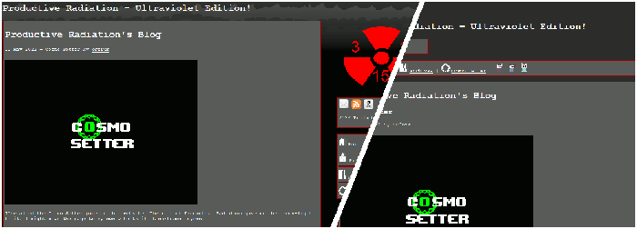
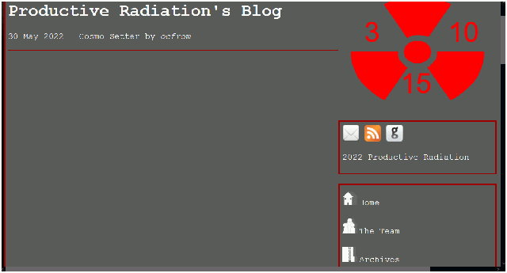
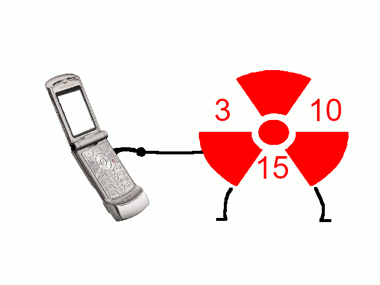

"News Roundup"07 JUNE 2022 BY ATOMYIIKQuite a few things happened during this week, so here's the scoop! AN ENTIRE WEBSITE REDESIGN NOW FINISHED. ABSOLUTELY BEAUTIFUL. I've finally finished the website redesign. It took like, two days. I noticed the website did really look too hot in smaller dimensions, so that's really the main reason I made the update (see picture below).  Hopefully, this redesign will help out those on their mobile devices or with smaller screens! (We also now have a TUMBLR BLOG run and set up by Jay. Thank you!) Uproots added to the websiteI added an Uproots section at the request of Jay. Uproots is a surreal RPG being developed by Jay (and some other people I think including me). It has a really cool soundtrack (seriously, listen to this!) and I think it'll be a great idea to play it when it comes out. Thanks for reading this roundup! More things are to come from Productive Radiation! |